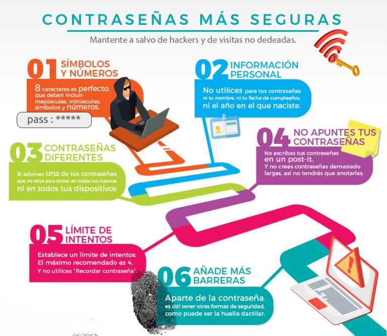

Curso de Seguridad en Línea
Bienvenidos al Curso de Navegación Segura en Internet
En este curso, aprenderemos cómo navegar de forma segura en Internet. El curso se basa en poder aprender a identificar y reconocer los peligros y problemas que hay en Internet. Nuestro curso cuenta con 4 módulos, los cuales son:
- Privacidad en Línea: Aprenderás cómo proteger tu información personal y mantener tus datos seguros.
- Identificación de Contenido Inapropiado: Descubrirás cómo reconocer y evitar contenido que no es adecuado para ti.
- Acoso Cibernético: Entenderás qué es el acoso en línea y cómo responder si alguna vez te ocurre.
- Comportamiento Ético en Internet: Aprenderás las reglas de conducta para ser un buen ciudadano digital y tratar a los demás con respeto.
Estos módulos tienen subtemas que irás completando poco a poco a medida que avances en cada módulo. El objetivo del curso es que puedas aprender a cómo evadir los problemas de Internet y cómo mantener tus datos seguros. ¡Así que, empecemos esta gran aventura juntos!
Privacidad en Línea
Bienvenidos, chicos y chicas, a una lección importante sobre la privacidad en línea. La privacidad en línea significa mantener tu información personal segura y protegida cuando usas Internet. Esto es muy importante porque, al igual que no le contarías tus secretos a un extraño, tampoco quieres compartir tu información personal con personas desconocidas en Internet.
En esta lección, aprenderemos por qué es importante proteger nuestra privacidad en línea y algunos consejos sencillos para mantener nuestra información segura. ¡Vamos a explorar juntos cómo podemos disfrutar de Internet mientras nos mantenemos seguros!
Seguridad de las contraseñas
¿Sabías que las contraseñas son como las llaves mágicas que protegen tus cosas en línea? Imagina que tienes un cofre lleno de tesoros en tu computadora o tablet. Para asegurarte de que nadie más pueda abrir ese cofre, ¡necesitas una contraseña fuerte y segura!
Pero, ¿qué hace que una contraseña sea segura? Bueno, es como un juego de mezclar y combinar. Aquí hay algunos trucos para crear una contraseña que sea súper fuerte:
- Usa una mezcla de letras, números y símbolos:¡Como si estuvieras haciendo una sopa de letras, pero con un poco de magia! Combina letras mayúsculas y minúsculas, números y símbolos como el signo de exclamación o el símbolo de dólar.
- Hazla larga y única: Cuantas más letras y números tengas en tu contraseña, ¡más difícil será para los piratas informáticos adivinarla! Y recuerda, ¡nunca uses la misma contraseña para todo! Cada tesoro en línea necesita su propia llave secreta.
- No uses información personal: Evita usar cosas como tu nombre, tu cumpleaños o el nombre de tu mascota. ¡Eso sería como decirle a todo el mundo cuál es tu contraseña!
Recuerda, ¡tu contraseña es tu secreto! No se lo digas a nadie más que a tus padres o a un adulto de confianza. Y si alguna vez crees que alguien más puede haber descubierto tu contraseña, ¡cámbiala rápido como un relámpago!
En la siguiente imagen, encontrarás varios consejos que te ayudarán a crear contraseñas mucho más seguras:
Actividad: Evalúa la fuerza de tu contraseña
Violencia y gore
Contenido de violencia y gore...
Contenido sexual y desnudez
Contenido de contenido sexual...
Lenguaje inapropiado
Contenido de lenguaje inapropiado...
Phishing
Contenido de phishing...
Trolling
Contenido de trolling...
Comentarios ofensivos
Contenido de comentarios ofensivos...
Privacidad y seguridad personal
Contenido de privacidad y seguridad personal...
Uso responsable de las tecnologías
Contenido de uso responsable de las tecnologías...
Conclusiones
Conclusiones del curso...